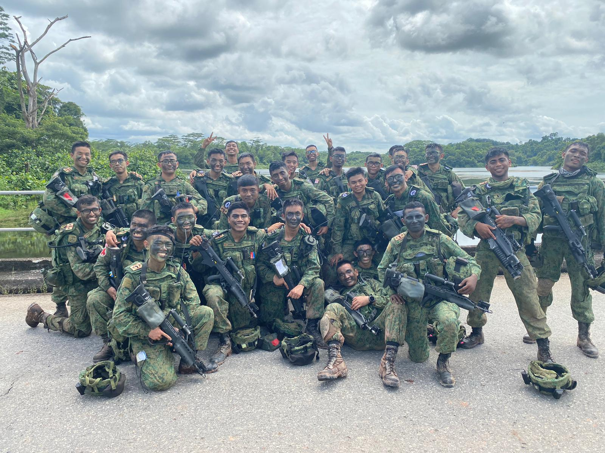
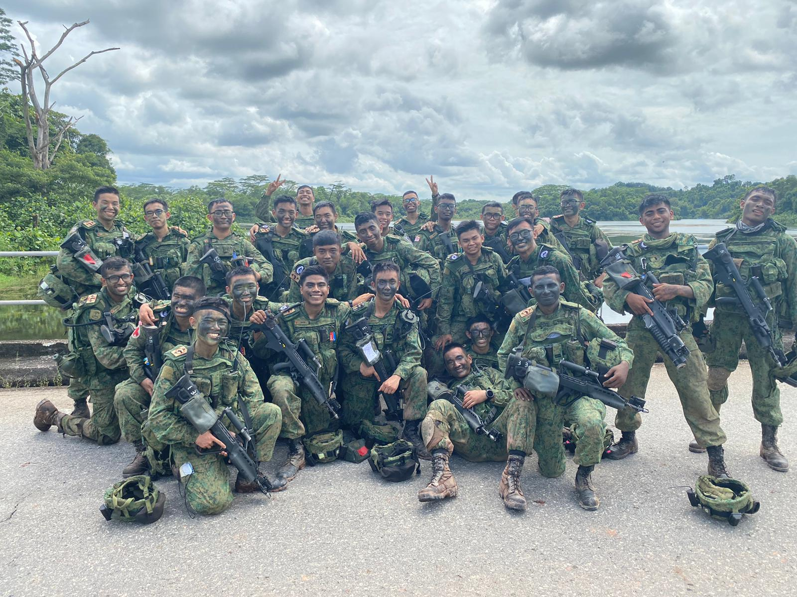

Amazon Prime
Amazon Prime provided me experience with warehouse operations and
allowed me to understand and experience first-hand the processes
that a multinational online retail company take to handle large
amounts of orders daily. Through working there i also learned
inventory and stock-taking methods that will be relevant if I am
to work in a similar industry in the future.
Panasonic Factory Solutions
During my time at Panasonic, the company was still new to the field
of indoor farming. Together with the company, we experimented and
found various ways and methods to improve our farming processes.
Through this role, I also managed to interact with people from other
countries with very different backgrounds that changed the perspectives
of my young self back then.
National Service
I was enisted into an infantry mono-intake battalion in 2019. It was
a tough and gruelling 3 years and through those experiences i have
learnt to not take things for granted. The arduous outfields and the
very memorable Exercise in Brunei have made me a more resilient person
who has the grit to get going in tough times.
 
